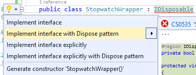

C# alapok IV.¶
Ezen a gyakorlaton több különféle nyelvi konstrukciót tekintünk át, vegyesfelvágott jelleggel. Az egyes fő témaköröket külön projektként dolgozzuk ki. A projekteket hozzáadhatjuk az elsőként létrehozott projekt solutionjéhez (menu:jobbklikk a solution-ön[Add > New project]). Hozzáadás után ne felejtsük el átállítani a futtatandó projektet: menu:jobbklikk a projekten[Set as Startup Project].
Bejárási problémák¶
Enumerátorok használata esetén két alapvető problémába ütközünk: az egyik a mögöttes kollekció módosulása bejárás során, a másik pedig a késleltetett kiértékelésből adódó mellékhatások kezelése.
Kollekció módosulása bejárása során¶
Szűrjünk le egy számokat tartalmazó kollekciót csak azokra az elemekre, amik megfelelnek egy feltételnek, és ezeket távolítsuk el a kollekcióból!
var numbers = Enumerable.Range(1, 8).ToList();
foreach (var p in numbers)
{
if (p % 2 == 0)
{
numbers.Remove(p);
}
}
numbers.ForEach(Console.WriteLine);
Futtatáskor kivételt kapunk. Mi a probléma? A kollekciót bejárás közben szerettük volna módosítani, viszont ez könnyen nem várt működést (túlcímzést, nemdeterminisztikus bejárást) tenne lehetővé, ezért kivételt kapunk. Oldjuk meg a problémát: nem módosíthatjuk a forrás objektumot bejárás közben, tehát ne azt a kollekciót járjuk be, másoljuk le!
foreach (var p in numbers.ToList()) // a ToList bekerült
{
// ...
}
Ez megoldja a problémát, sikerül eltávolítani az elemeket a kollekcióból. De miért?
A ToList IEnumerable bővítő, tehát bejárhatja a kollekciót, ezután pedig egy másik List<> objektumban tárolja az elemeket.
Így tehát két listánk lesz (a numbers és a numbers.ToList visszatérési értéke), amik kezdetben egymás klónjai, menet közben az egyikből veszünk ki, a másikon pedig iterálunk.
Kivételek
Bár a fenti az általános szabály, bizonyos kollekciók bizonyos módosító műveletei mégsem dobnak kivételt, ilyen például a Dictionary<,> Remove és Clear műveletei.
Azonnali és késleltetett kiértékelés¶
Amennyiben egy metódus generátor (IEnumerable vagy IEnumerable<> visszatérési értékű), az egyes elemeken történő iteráció a generátorok egymásba ágyazását jelenti, azaz az egyes generátorokban a yield return által visszaadott értéket fogja az enumerátor MoveNext metódusa visszaadni.
Amíg az IEnumerable-re van referenciánk, és nem járjuk azt közvetlenül be, addig késleltetett kiértékelésről beszélünk.
Az eddigiek alá:
var i = 0;
foreach (var n in numbers
.Where(p => p > 2)
.Select(p => new { p, x = ++i }))
{
Console.WriteLine($"{n} - {i}");
}
Console.WriteLine();
i = 0;
foreach (var n in numbers
.Where(p => p > 2)
.Select(p => new { p, x = ++i })
.ToList())
{
Console.WriteLine($"{n} - {i}");
}
A ToList hívásunk először bejárja az iterátort és visszaad egy listát, amelybe összegyűjti az IEnumerable elemeit.
Ezért az i változónk a második esetben nem együtt inkrementálódik a bejárással, mert az kétszer történik meg.
Az első bejáráskor (a ToList hívásakor) inkrementálódik az i értéke, másodjára pedig már csak bejárjuk a kapott listát.
Eddigre az i értéke már meg van növelve.
Ezzel a megközelítéssel futásidőben is állíthatunk össze egy időben változó lekérdezést, amit majd egyszer, a későbbiekben fogunk bejárni (pl. sorosításkor).
Aszinkron működés¶
Töltsünk le egy HTML oldalt, és ezen a problémán keresztül bemutatjuk az aszinkron programozási modellt.
A HttpClient működésének a részletesebb ismertetése most nem téma, csak a legalapvetőbb funkciókat fogjuk használni.
A fő gond, hogy a hosszan futó műveletek blokkolhatják a fő/UI/aktuális szál futását, mindez kliens alkalmazások esetében úgy jelentkezik, hogy nem lesz az alkalmazásunk reszponzív a felhasználói bemenetekre; szerveralkalmazások esetében pedig az adott kérést kiszolgáló szál feleslegesen blokkolódik, amikor esetleg mással is tudna foglalkozni.
Ötlet: a hosszan tartó műveleteket végezzük aszinkron módon, és ha az befejeződött az eredményről valamilyen módon értesüljünk. A keretrendszer többféle mintát kínál erre:
- Asynchronous Programming Model (APM),
- Event-based Asynchronous Pattern (EAP),
- Task-based Asynchronous Pattern (TAP).
Mi most a legutóbbival foglalkozunk csak, a többi jórészt elavultnak számít ma már.
TAP és async/await alapjai¶
A TAP-ra már C# nyelvi támogatást is kapunk az async/await kulcsszavakon keresztül.
Vegyünk fel egy új metódust és hívjuk meg a legfelső szintű kódban.
A megírt metódus írása során hivatkozzuk be a System.Net.Http névteret.
A kód semmi mást nem csinál, csak elindít aszinkron módon egy HTTP GET kérést a megadott URL-re, illetve a válasz tartalmát is aszinkron módon kiolvassa és egy részét kiírja a konzolra.
LoadWebPageAsync();
Console.WriteLine("Ez a vége");
Console.ReadKey();
static async void LoadWebPageAsync()
{
using (var client = new HttpClient())
{
var response = await client.GetAsync(new Uri("http://www.bing.com"));
Console.WriteLine(response.StatusCode.ToString());
var content = await response.Content.ReadAsStringAsync();
Console.WriteLine(content.Take(1000).ToArray());
}
}
await: Mindig egy Task await-elhető (vagy taszk szerű dolog: vagyis van neki GetAwaiter metódusa, ami meghatározott metódusokkal rendelkező objektummal tér vissza)!
Akár létre is hozhatunk egy Task-ot, amit egy lokális változóban tárolunk, akkor azt is tudjuk await-elni.
async: Ha await-elni akarunk, akkor muszáj async-nak lennie a tartalmazó metódusnak, mert ilyenkor építi fel a fordító az aszinkron végrehajtáshoz szükséges állapotgépet.
Debuggoljuk ki! Minden Console, async sorra tegyünk töréspontot, debuggolás során (F5) kövessük végig, milyen sorrendben éri el őket a végrehajtás.
Nézzük meg, melyik rész milyen szálon fut le (debug közben menu:Debug[Windows > Threads]).
A LoadWebPageAsync utáni rész előbb fog lefutni, mint az első await utáni rész.
Az await utáni rész nem a Main Thread-en fut.
Figyeljük meg azt is, hogy az Ez a vége szöveg hamarabb kiíródik, mint a HTML oldal letöltése.
Próbáljuk ki a Console.ReadKey-t kikommentezve is, ilyenkor jó eséllyel hamarabb leáll a process, minthogy a Task befejeződne. Az ilyen fire-and-forget típusú hívásoknál nem figyel arra senki, hogy itt még valami háttérművelet folyik.
async void kerülendő
Az async void általában helytelen kód, mert nem lehet bevárni a háttérművelet végét. Az async Task máris jobb a bevárhatóság és a hibakezelés miatt, és alig kell módosítani a kódot. Kivétel, amikor valamiért kötelező a void, például, ha esemény vagy interfész előírja.
Az oldalletöltés bevárása¶
Módosítsuk úgy a kódot, hogy a LoadWebPageAsync utáni rész várja meg a letöltés befejeződését. Ez akkor jó például, ha a letöltés után valamit még szeretnék elvégezni a hívó függvényben.
Módosítsuk a LoadWebPageAsync fejlécét, hogy taszkot adjon vissza:
public static async Task LoadWebPageAsync() //void helyett Task
Várjuk be az aszinkron művelet végét a legfelső szintű kódban.
await LoadWebPageAsync(); //await bekerült
Console.WriteLine("Ez a vége");
/*Console.ReadKey();*/
Figyeljük meg, hogy így már az Ez a vége felirat már a letöltés után jelenik meg.
await-et használtunk a legfelső szintű kódban, ilyenkor automatikusan async kulcsszóval ellátott Main generálódik - valami hasonló, mint az alábbi kódrészlet.
await LoadWebPageAsync();
Console.WriteLine("Ez a vége");
//Console.ReadKey();
Háttérművelet eredményének visszaadása¶
Alakítsuk át, hogy a weboldal tartalmának kiíratása a legfelső szintű kódban történjen, és a LoadWebPageAsync csak adja vissza a tartalmat string-ként.
Ehhez módosítsuk a visszatérési értéket Task<string>-re, így az await már eredménnyel fog tudni visszatérni.
var content = await LoadWebPageAsync();
Console.WriteLine(content);
Console.WriteLine("Ez a vége");
Console.ReadKey();
static async Task<string> LoadWebPageAsync() //generikus paraméter
{
using (var client = new HttpClient())
{
var response = await client.GetAsync(new Uri("http://www.bing.com"));
Console.WriteLine(response.StatusCode.ToString());
var content = await response.Content.ReadAsStringAsync();
return new string(content.Take(1000).ToArray());
}
}
A return valójában ezen Task eredményét állítja be async metódusok esetében, és nem egy nemgenerikus Task objektummal kell visszatérjünk.
Nem(igazán) nullozható referencia típusok¶
Korábban láttuk, hogy hogyan lehet egy érték típusnak null értéket adni (Nullable<T>).
Az érem másik oldala a C# 8-ban megjelent nem nullozható referencia típusok.
Nem egy új típust vezettek be, hanem az eddig megszokott típusneveket értelmezi máshogyan a fordító.
A projektfájlban az alábbi beállítás kapcsolja be ezt a funkciót.
<Nullable>enable</Nullable>
Egyéb konfigurációs lehetőségek
Ezen kívül még preprocessor direktívákkal is szabályozhatjuk a működést.
Induljunk ki egy egyszerű személyeket nyilvántartó adatosztályból, ahol elhatározzuk, hogy a középső név kivételével a többi névdarab nem nullozható szöveg lesz.
Console.WriteLine("Hello World!");
class Person
{
string FirstName; // Not null
string? MiddleName; // May be null
string LastName; // Not null
}
Ez máris számos figyelmeztetést generál.
A nem nullozható referencia típusok bekapcsolásával alapesetben nem hibák, csak új figyelmeztetések generálódnak.
A vezetéknév és keresztnév adatoknak nem szabadna null értékűnek lennie (a sima string típus nem nullozható típust jelent), viszont így az alapérték nem egyértelmű, explicit inicializálnunk kellene.
Fontos megértenünk, hogy a string típus fizikailag továbbra is lehet null értékű, mindössze a fordító számára jelezzük, hogy szándékunk szerint sohasem szabadna null értéket felvennie.
A fordító cserébe figyelmeztet, ha ezt megsértő kódot detektál.
Az egyik legkézenfekvőbb megoldás (az inline inicializáció mellett), ha konstruktorban inicializálunk konstruktorparaméter alapján. Adjunk konstruktort a típusnak:
public Person(string fname, string lname, string? mname)
{
FirstName = fname;
LastName = lname;
MiddleName = mname;
}
Ezzel meg is oldottunk minden figyelmeztetést.
Rebuild
Ha biztosan látni akarjuk az összes figyelmeztetést, akkor sima Build művelet helyett használjuk a Rebuild-et.
Konstruktorok
Sajnos a kötelezően konstruktoron keresztüli inicializáció nem mindig működik, például a sorosítók általában nem szeretik, ha nincs alapértelmezett konstruktor.
Mennyire okos a fordító a null érték detektálásában?Nézzünk pár példát!
Az alábbi statikus függvényt tegyük bele a Person osztályunkba és vegyük fel a using static System.Console; névtérhivatkozást is.
static void M(string? ns)
{
WriteLine(ns.Length); // (1)!
if (ns != null)
{
WriteLine(ns.Length); // (2)!
}
if (ns == null)
{
return;
}
WriteLine(ns.Length); // (3)!
ns = null;
WriteLine(ns.Length); // (4)!
string s = default(string); // (5)!
string[] a = new string[10]; // (6)!
}
- Figyelmeztetés lehetséges
nullértékre, mert a típusa szerint nullozható. - Ha egy egyszerű
if-fel levizsgáljuk, akkor máris ok. Pedig pl. többszálú környezetben azifkiértékelése és ezen sor végrehajtása között a változó akárnullértékre is beíródhat. - Az előtte lévő rövidzár is megnyugtatja a fordítót, így itt sincs figyelmeztetés.
- Ezt az előző sor alapján figyelmeztetéssel jutalmazza.
- Ez is figyelmeztetés, a
defaultoperátor által adott értékkel (null) nem inicializálhatunk. - Ez viszont nem figyelmeztetés, pedig egy csomó
nulljön létre. Ha ez figyelmeztetés lenne, az aránytalanul megnehezítené a tömbök kezelését.
Látható, hogy az egyszerűbb eseteket jól kezeli a fordító, de korántsem mindenható, illetve nem mindig szól akkor sem, amikor egyébként szólhatna.
A további példákhoz vegyünk fel pár segédfüggvényt a Person osztályba:
private Person GetAnotherPerson()
{
return new Person(LastName, FirstName, MiddleName ?? string.Empty);
}
private void ResetFields()
{
FirstName = default!;
LastName = null!;
MiddleName = null;
}
Látható, hogy vannak megkerülő megoldások arra, hogy ráerőszakoljuk a fordítóra az akaratunkat, a felkiáltójel használatával beírhatunk null értékeket nem nullozható változókba (ez az ún. null forgiving operator ).
Illetve string esetén null helyett használhatjuk az üres string értéket - ami nem biztos, hogy sokkal jobb a null értéknél.
Mindenesetre ezek a függvények nem okoznak újabb figyelmeztetéseket.
Nézzük meg, hogy mennyire tudja lekövetni a fenti függvények működését a fordító.
Vegyünk fel ennek tesztelésére egy újabb függvényt a Person osztályba:
void M(Person p)
{
if (p.MiddleName != null)
{
p.ResetFields();
WriteLine(p.MiddleName.Length); // (1)!
p = GetAnotherPerson();
WriteLine(p.MiddleName.Length); // (2)!
}
p.FirstName = null; // (3)!
p.LastName = p.MiddleName; // (4)!
}
- A fordító nem követi le, hogy a
ResetFieldsveszélyes módon változtatja az állapotot, csak azt nézi, hogy azifmár kivédte a veszélyt. - Ez egy fals pozitívnak tűnő eset, az előző sorban lévő függvény alapján a
p.MiddleNamenem lehetnenull, de a fordító csak azt figyeli, hogy a beburkolóifellenőrzése apmegváltozása miatt már nem érvényes. - Egyértelműen jogos figyelmeztetés.
- Jogos a figyelmeztetés, mert nem kezeljük a
p.MiddleName == nullesetet.
Struktúratagok esetén is a fals negatív eset jön elő. Próbáljuk ki, akár a Person osztályba írva:
struct PersonHandle
{
public Person person;
}
Nem kapunk figyelmeztetést.
A felkiáltójeles ráerőszakolást a ResetFields-ben látható ámokfutás helyett inkább a fals pozitív esetek kezelésére használjuk.
Javítsuk ki a GetAnotherPerson hívás miatti fals pozitív esetet az M(Person) függvényben:
p = GetAnotherPerson();
WriteLine(p.MiddleName!.Length); //bekerült egy '!'
Figyeljük meg, ahogy a figyelmeztetés eltűnik.
Ha igazán elkötelezettek vagyunk a null kiirtása mellett, akkor bekapcsolhatjuk, hogy minden, a null kezelés miatti, fordító által detektált figyelmeztetés legyen hiba.
A projekt beállítási között (menu:a projekten jobbklikk[Properties]), a Build lapon adjuk meg a Treat specific warnings as errors opciónak a nullable értéket.
(Ha több értéket akarunk megadni, akkor a ; elválasztót alkalmazhatjuk.)
Ellenőrizzük, hogy tényleg hibaként jelennek-e meg az eddigi null kezelés miatti figyelmeztetések.
Mivel ez csak egy példakód, ne javítsuk ki a hibákat, csak távolítsuk el a projektet a solutionből (menu:a projekten jobbklikk[Remove]).
Tuple nyelvi szinten, lokális függvények, Dispose minta¶
Tuple nyelvi szinten, lokális függvények¶
Készítsünk Fibonacci számsor kiszámolására alkalmas függvényt, ahol használjuk ki az alábbi két új nyelvi elemet. Természetesen nagyon sokféleképpen meg lehetne valósítani ezt a metódust, de most kifejezetten a tuple-ök nyelvi támogatását és lokális függvényeket szeretnénk demonstrálni.
- Lokális függvények: ezek a függvények csak adott metódusban láthatók.Két esetben érdemes őket használni: ha nem szeretnénk „szennyezni” a környező osztályt különféle privát segédmetódusokkal, vagy ha egy mélyebb, komplexebb hívási láncban nem szeretnénk a paramétereket folyamatosan továbbpasszolni, ugyanis ezek a metódusok elérik a külső scope-on található változókat is (a lenti esetben például az
x-et). - Value tuple típus: a tuple (ennes) több összetartozó érték összefogása, ami gyors, nyelvi szinten támogatott adattovábbítást tesz lehetővé - gyakorlatilag inline, nevesítetlen struktúratípust hozunk így létre. Publikus API-kon, függvényeken nem érdemes használni, viszont privát, belső használatnál sebességnövekedést és API tisztulást érhetünk vele el. Érték típus.
Referencia típusú Tuple<>
Léteznek generikus Tuple<> típusok is. Ezek referencia típusok, hasonló szerepet töltenek be, viszont az egyes értékeiket az elég semmitmondó Item1, Item2… neveken lehet elérni.
static long Fibonacci(long x)
{
(long Current, long Previous) Fib(long i) # (1)!
{
if (i == 0) return (1, 0);
var (curr, prev) = Fib(i - 1); # (2)!
Thread.Sleep(100); # (3)!
return (curr + prev, curr);
}
return x < 0
? throw new ArgumentException("Less negativity please!", nameof(x))
: Fib(x).Current;
}
- Nevesített tuple visszatérés. Ez egy lokális függvény, szintaxist tekintve függvényen belüli függvény.
- Az eredmény eltárolása egy tuple változóban. Ezzel dekonstruáljuk is, darabokra szedjük a tuple-t, mert
curr,prevváltozón keresztül elérjük a kétlongalkotórészt. Ugyanezen sorban történik a rekurzív hívás is. - Lassú művelet szimulációja mesterséges késleltetéssel.
Dekonstrukció
A dekonstrukciós szintaxis a korábbi gyakorlaton megismert rekord típusok esetén is működik.
Dispose minta¶
A Dispose minta az erőforrás-felszabadítás megfelelő megvalósításához készült.
Hasonló elv mentén üzemel, mint a destruktor, viszont a minta nem feltétlenül kötött az objektum életciklusának elejéhez és végéhez.
Amennyiben egy objektum megvalósítja az IDisposable interfészt, van Dispose metódusa.
A metódus meghívásával az objektum által használt, nem a keretrendszer által menedzselt erőforrásokat szabadítjuk fel.
Nem csak memóriafoglalásra kell gondolni, hanem lehetnek nyitott fájlrendszeri handle-ök, adatkapcsolatok, stream-ek, vagy üzleti erőforrások, tranzakciók.
Mérjük meg az első pár Fibonacci szám kiszámítását (a mesterséges késleltetéssel):
var sw = Stopwatch.StartNew();
foreach (var n in Enumerable.Range(1, 15))
{
Console.WriteLine($"{n}: {Fibonacci(n)}");
}
sw.Stop();
Console.WriteLine($"Elapsed: {sw.ElapsedMilliseconds}");
Console.ReadKey();
Ez így jó, működik, viszont nem újrahasznosítható ez az időmérési mechanizmus.
Készítsünk egy saját időmérő osztályt StopwatchWrapper néven, ami a Stopwatch használatát egyszerűsíti a Dispose mintán keresztül.
public class StopwatchWrapper : IDisposable
{
public Stopwatch Stopwatch { get; }
public string Title { get; }
public StopwatchWrapper(string? title = default)
{
Title = title ?? Guid.NewGuid().ToString();
Console.WriteLine($"Task {title} starting at {DateTime.Now}.");
Stopwatch = Stopwatch.StartNew();
}
}
Ha kérjük a villanykörte segítségét az IDisposable-ön, akkor 2x2 lehetőségünk van: megvalósítjuk az interfészt implicit vagy explicit, illetve megvalósítjuk-e az interfészt a Dispose mintát alkalmazva. Valósítsuk meg implicit a Dispose mintát!

{kind=link}
Fussuk át a generált kódot, ami szépen kommentezett.
A pattern lényege, hogy a nem menedzselt erőforrásokat (unmanaged objects / resources) szükséges felszabadítanunk, amit a Dispose metódusokban, illetve menedzselt kód esetén a kommentekkel kijelölt helyen érdemes elvégeznünk.
Készítsük el az időmérő mechanizmust!
protected virtual void Dispose(bool disposing)
{
if (!disposedValue)
{
if (disposing)
{
Stopwatch.Stop();
Console.WriteLine(
$"Task {Title} completed in { Stopwatch.ElapsedMilliseconds} ms "+
$"at { DateTime.Now}");
}
disposedValue = true;
}
}
Csak felügyelt erőforrásokkal (managed objects) dolgozunk, így csak egy helyen kellett a leállító logikát megadnunk.
Az IDisposable interfészt megvalósító elemekkel használhatjuk a using konstrukciót:
using (new StopwatchWrapper("Fib 1-15"))
{
foreach (var n in Enumerable.Range(1, 15))
{
Console.WriteLine($"{n}: {Fibonacci(n)}");
}
}
Tehát a using használatával a blokk elejét és végét tudjuk kezelni. Gyakorlatilag egy try-finally-val ekvivalens a minta, a finally-ben meghívódik a Dispose metódus.
Jelenleg csak a folyamat végén kapunk jelentést az eltelt időről. Részidők kiírásához készítsünk egy segédfüggvényt a StopwatchWrapper-be:
public void Snapshot(string text) =>
Console.WriteLine(
$"Task {Title} snapshot {text}: {Stopwatch.ElapsedMilliseconds} ms"
);
Hívjuk meg a foreach ciklusból:
using (var sw = new StopwatchWrapper("Fib 1-15"))
{
foreach (var n in Enumerable.Range(1, 15))
{
sw.Snapshot(n.ToString());
Console.WriteLine($"{n}: {Fibonacci(n)}");
}
}